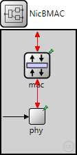
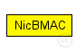
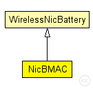

This documentation is released under the Creative Commons license
This documentation is released under the Creative Commons licenseThis module implements a BMAC network interface card using the "BMACLayer" MAC layer module
The following diagram shows usage relationships between types. Unresolved types are missing from the diagram. Click here to see the full picture.
The following diagram shows inheritance relationships for this type. Unresolved types are missing from the diagram. Click here to see the full picture.
| Name | Type | Description |
|---|---|---|
| WirelessNicBattery | compound module |
Basic wireless nic definition |
| Name | Type | Default value | Description |
|---|---|---|---|
| connectionManagerName | string | "" |
name of the ConnectionManager module |
| phyType | string | "org.mixim.modules.phy.PhyLayerBattery" | |
| macType | string | "BMacLayer" | |
| sleepCurrent | double | ||
| rxCurrent | double | ||
| decodingCurrentDelta | double | ||
| txCurrent | double | ||
| setupRxCurrent | double | ||
| setupTxCurrent | double | ||
| rxTxCurrent | double | ||
| txRxCurrent | double |
| Name | Direction | Size | Description |
|---|---|---|---|
| upperLayerIn | input |
to upper layers |
|
| upperLayerOut | output |
from upper layers |
|
| upperControlOut | output |
control information |
|
| upperControlIn | input |
control information |
|
| radioIn | input |
radioIn gate for sendDirect |
| Name | Type | Default value | Description |
|---|---|---|---|
| mac.headerLength | int |
length of the MAC packet header (in bits) |
|
| mac.address | string |
MAC address as hex string (12 hex digits), or "auto". "auto" values will be replaced by a generated MAC address in init stage 1. |
|
| phy.recordStats | bool |
enable/disable tracking of statistics (eg. cOutvectors) |
|
| phy.headerLength | int |
defines the length of the phy header (/preamble) |
|
| phy.usePropagationDelay | bool |
Should transmission delay be simulated? |
|
| phy.thermalNoise | double |
the strength of the thermal noise [dBm] |
|
| phy.useThermalNoise | bool |
should thermal noise be considered? |
|
| phy.analogueModels | xml |
Specification of the analogue models to use and their parameters |
|
| phy.decider | xml |
Specification of the decider to use and its parameters |
|
| phy.sensitivity | double |
The sensitivity of the physical layer [dBm] |
|
| phy.maxTXPower | double |
The maximum transimission power of the physical layer [mW] |
|
| phy.timeRXToTX | double | ||
| phy.timeRXToSleep | double |
Elapsed time to switch from receive to sleep state |
|
| phy.timeTXToRX | double |
Elapsed time to switch from send to receive state |
|
| phy.timeTXToSleep | double |
Elapsed time to switch from send to sleep state |
|
| phy.timeSleepToRX | double |
Elapsed time to switch from sleep to receive state |
|
| phy.timeSleepToTX | double |
Elapsed time to switch from sleep to send state |
|
| phy.initialRadioState | int |
State the radio is initially in (0=RX, 1=TX, 2=Sleep) |
|
| phy.radioMinAtt | double |
radios gain factor (attenuation) while receiving |
|
| phy.radioMaxAtt | double |
radios gain factor (attenuation) while not receiving |
|
| phy.nbRadioChannels | int |
Number of available radio channels. Defaults to single channel radio. |
|
| phy.initialRadioChannel | int |
Initial radio channel. |
// // This module implements a BMAC network interface card using // the "BMACLayer" MAC layer module // module NicBMAC extends WirelessNicBattery { parameters: macType = "BMacLayer"; }
This documentation is released under the Creative Commons license